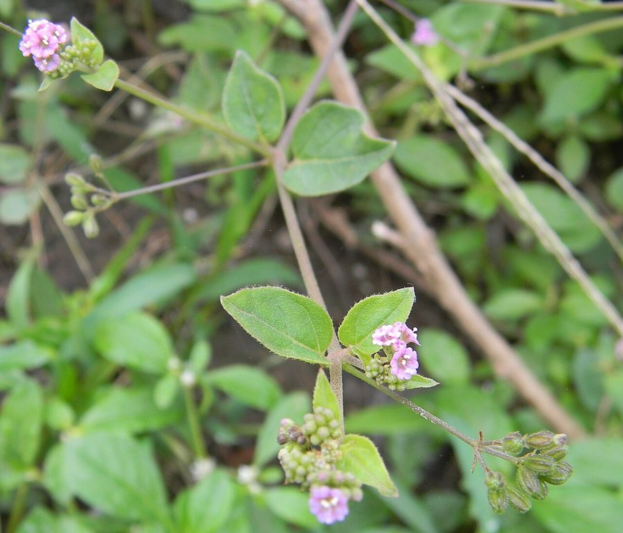

पुनर्नवाPunarnava
Boerhavia diffusa · Nyctaginaceae · FLR-0085

- Scientific name
- Boerhavia diffusa L.
- Family
- Nyctaginaceae
- Hindi
- पुनर्नवा
- Status here
- native
- IUCN
- not evaluated
When to look कब देखें
Present all year.
पुनर्नवा / Punarnava
Boerhavia diffusa L. — Nyctaginaceae
पुनर्नवा (गधापूर्णा / सांत / स्प्रेडिंग हॉगवीड) — पूर्वी उत्तर प्रदेश के खेतों की सीमाओं, रास्तों के किनारों, उद्यानों और बंजर भूमि में उगने वाला एक बहुत ही आम, जमीन पर फैलने वाला बहुवर्षीय शाकीय पौधा (creeping/spreading herb) है। अक्सर इसे एक सामान्य खरपतवार मानकर नजरअंदाज कर दिया जाता है, लेकिन यह आयुर्वेद की सबसे महत्वपूर्ण औषधियों में से एक है। इसकी सबसे बड़ी पहचान इसके जमीन पर फैलने वाले लाल-बैंगनी रंग के तने (reddish-purple stems), छोटे गोल-अंडाकार पत्ते और इसके शाखाओं के सिरों पर खिलने वाले अत्यंत छोटे गुलाबी या लाल रंग के फूल हैं। इसकी पत्तियाँ ऊपर से हरी और नीचे से सफेद-धूसर रंग की होती हैं। आयुर्वेद में इसे गुर्दे (kidney) का सबसे अच्छा टॉनिक माना जाता है जो शरीर की सूजन (oedema), मूत्र विकारों और पीलिया को ठीक करने में मदद करता है। इसके संस्कृत नाम 'पुनर्नवा' का अर्थ है 'वह जो शरीर को दोबारा नया बना दे' (that which renews the body)। पूर्वी उत्तर प्रदेश के गांवों में इसकी कोमल पत्तियों को साग (punarnava ka saag) के रूप में भी पकाया और खाया जाता है।
Quick Identification त्वरित पहचान
| Feature | Description |
|---|---|
| Plant habit | Diffuse, prostrate, heavily branched perennial herb, spreading 30–100 cm over the ground |
| Stem | Fleshy, reddish-purple, cylindrical, smooth or slightly hairy, swollen at the nodes |
| Leaves | Arranged in unequal opposite pairs, ovate or rounded, dark green above and distinctly silver-white beneath |
| Flowers | Microscopic (1.5–2 mm), bright pink, reddish-purple, or magenta, clustered in small heads at branch tips |
| Fruit | A small, 5-ribbed, sticky, club-shaped nutlet (3–4 mm) that clings to clothes and animal fur |
Field tip: Look in lawns or vegetable gardens during August. Search for creeping green-red stems spreading flat on the soil. Inspect the leaves; they grow in opposite pairs where one leaf is always larger than the other, and their undersides are whitish. Look for tiny, dot-like pink flowers.
Morphology आकारिकी
Biometrics (typical measurements of mature plants in the northern Indian plains):
| Measurement | Range |
|---|---|
| Stem length | 30–100 cm |
| Stem thickness | 2–4 mm |
| Leaf length | 2.0–4.0 cm |
| Flower diameter | 1.5–2.0 mm |
| Fruit length | 3–4 mm |
| Seed size | 1.5–2.0 mm |
Stem and Branches: Stems are prostrate or partially ascending, highly branched, woody at the base in older plants, swollen at the node joints.
Foliage: Simple, opposite leaves, with wavy margins. The leaf under-surface has tiny waxy cells that give it a pale, silvery appearance.
Flowers: Sub-sessile, bisexual, clustered in small, 2-10 flowered umbel-like heads on thin stalks.
Fruit and Seeds: The dry fruit is glandular and sticky, exuding a glue-like sap from its ribs which helps in seed dispersal by sticking to passing animals (epizoochory).
Associated Species / Interactions संबंधित प्रजातियाँ
- Epizoochory: The sticky fruits attach easily to the fur of dogs, cattle, and the feathers of ground-roosting birds, dispersing the seeds far from the parent plant.
- Pollinators: Small hoverflies, thrips, and sweat bees are attracted to the tiny pink flowers.
- Ecological role: Acts as a pioneer colonizer on loose roadside soil, helping to bind sandy surfaces.
Pests and Diseases कीट और रोग
- White Rust: Caused by the fungus Albugo, producing white patches on the underside of leaves.
- Caterpillar Defoliation: Larvae of some micro-moths feed on the tender leaf buds.
- Root Rot: Occurs during heavy waterlogging in clay soils.
Traditional Preparations पारंपरिक औषधीय निर्माण
- Kidney Stones and Urinary Infections → Root → Boil 5 g of dried root in a cup of water until reduced to half to make a decoction → Drink 20-30 mL warm in the morning on an empty stomach.
- Oedema and Body Swelling → Leaves → Boil fresh leaves in water to prepare a tea, or cook them as a vegetable saag → Consume daily for 1-2 weeks.
- Jaundice and Liver Congestion → Whole Plant → Grind the fresh herb with water and filter through a clean cloth → Drink 10-15 mL of juice twice daily.
- Joint Pain and Arthritis Inflammation → Root → Grind the root into a thick paste with ginger juice → Apply topically over swollen joints.
- Eye Redness and Styes → Leaf Sap → Squeeze juice from fresh leaves and mix with a drop of honey → Apply 1 drop as a traditional eye drops under expert supervision.
Expected Locally स्थानीय रूप से अपेक्षित
Not a field record. Written from published accounts for eastern Uttar Pradesh. No confirmed local sighting yet — if you have seen it, that is what the atlas needs.
अभी तक स्थानीय पुष्टि नहीं। यह विवरण प्रकाशित स्रोतों से है, किसी अवलोकन से नहीं।
A very common native herb found across all blocks of the Basti district, regularly observed in the Harraiya, Vikramjot, and Basti blocks. Farmers consider it a common field weed but value its medicinal properties. During the monsoon, village women harvest the leafy shoots to cook Punarnava Saag, believing it cleanses the body and liver after the hot summer months.
Distribution वितरण
Global range: Native to South Asia (India, Pakistan, Nepal); now naturalized and widespread in all tropical and subtropical regions of the world (pantropical weed).
In India: Widespread throughout all plains, hillsides, and coastal zones.
In Uttar Pradesh: Abundant state-wide in all agricultural and wasteland districts.
In Basti district / eastern UP: Widespread across all rural and urban blocks.
Research Questions शोध प्रश्न
Anyone can investigate these | कोई भी इन प्रश्नों की जाँच कर सकता है
- How many days does a Punarnava branch take to grow 20 cm in length during the rainy month of August? — Measure and record daily shoot lengths.
- What is the germination rate of Punarnava seeds when collected from dry sticky fruits versus wet ones? — Conduct planting trials.
- Do local goats avoid grazing on mature Punarnava plants due to the sticky nature of the fruits? — Observe livestock grazing choices.
- How many sticky fruits attach to a sheep's leg when it walks through a patch of mature Punarnava? — Count and record attached fruits.
- Does the consumption of Punarnava saag increase the daily urine output of volunteers in your village? / क्या आपके गाँव में स्वयंसेवकों द्वारा पुनर्नवा साग का सेवन करने से उनकी दैनिक मूत्र की मात्रा बढ़ जाती है? — Document traditional observations.
Similar Species मिलती-जुलती प्रजातियाँ
| Species | How to tell apart | comparison |
|---|---|---|
| Common Purslane (Portulaca oleracea) | Has fleshy, spoon-shaped leaves; flowers are bright yellow, 5-petaled; stems are thick and juicy | कुल्फा / नोनी — मोटे रसीले चम्मच जैसे पत्ते, पीले फूल |
| Jungle Amaranth (Amaranthus viridis) | Erect annual; leaves have no white underside; flowers in spikes; lacks sticky fruits | जंगली चौलाई — सीधे खड़े पौधे, पाउडर या कांटों का अभाव |
| Tridax Daisy (Tridax procumbens) | Creeping stems but leaves are deeply toothed, hairy; flowers are white-yellow daisies on wire stalks | बिधारा — रोएँदार कटे पत्ते, डेज़ी जैसे फूल |
Field rule: Prostrate spreading weed with fleshy reddish-purple stems, unequal opposite leaves that are green above and whitish beneath, tiny pink flowers, and sticky, 5-ribbed club-shaped fruits, is Punarnava.
Taxonomy & Classification वर्गीकरण
Original description. Carl Linnaeus described Punarnava as Boerhavia diffusa in 1753 in his Species Plantarum (Vol. 1, p. 3). The type locality was listed as India. The genus name Boerhavia honors the Dutch physician and botanist Herman Boerhaave. The specific name diffusa is Latin for widely spreading or diffuse, referencing the plant's growth habit.
Subspecies. Monotypic — no subspecies are currently recognised.
Family and order placement. Placed in the order Caryophyllales, family Nyctaginaceae (four-o'clock family), tribe Nyctagineae.
Phylogenetic notes. Boerhavia diffusa represents a dry-adapted perennial lineage within Nyctaginaceae, having evolved highly efficient C4 photosynthesis, swollen water-storing nodes, and sticky glandular anthocarps (fruits) to facilitate epizoochorous seed dispersal.
IUCN status rationale. Not evaluated (NE) by the IUCN Red List. It has an extremely secure, expanding global population as a tropical weed.
Photo Gallery फोटो गैलरी
References संदर्भ
- Linnaeus, C. (1753). Species Plantarum. Laurentii Salvii, Holmiae, Vol. 1, p. 3. [original description]
- Brandis, D. (1906). Indian Trees (includes woody Nyctaginaceae relatives). Archibald Constable & Co., London.
- Kirtikar, K. R. & Basu, B. D. (1935). Indian Medicinal Plants. Vol. III. Lalit Mohan Basu, Allahabad.
- Chopra, R. N., Nayar, S. L. & Chopra, I. C. (1956). Glossary of Indian Medicinal Plants (focuses on Punarnava chemistry). CSIR, New Delhi.
- World Flora Online (2024). Boerhavia diffusa taxon details.
- GBIF Occurrence Data — Boerhavia diffusa, India (2010–2025).
Source file: species/flora/medicinal/punarnava.md